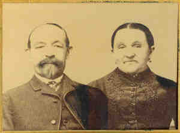

| 
Wilhemina SEEGER (Abt 1826-Bef 1910) |
Wilhemina SEEGER 455,3527,3742
Another name for Wilhemina was Wilhelmina SOGER.3741 General Notes: The 1900 census gave Switzerland as the birthplace of both her father and mother. Wilhelmina was almost buried alive at age 13-16. She was alert and aware of her surrounding but not move or talk. She was pronounced dead and was finally able to indicate that she was alive just before she was buried. 3527,3742 Noted events in her life were: • Alt. Birth, Aug 1829, , , , Switzerland. 3742 • Census, 19 Jul 1870, Highland, Madison Co., Illinois. 3739 • Census, 1880, Highland, Madison Co., Illinois. 3740 • Census, 9 Jun 1900, Saint Louis, St. Louis City, Missouri. 3742 Wilhemina married Michael STAMM on 3 Jan 1861 in , Madison Co., Illinois.3741 (Michael STAMM was born on 26 Oct 1823 in Baden, , Baden-Württemberg, Germany 3739,3744 and died on 1 Feb 1911 in Saint Louis, St. Louis City, Missouri 3534,3744.). The cause of his death was myocarditis. |
|
only search Stockdale Coddington Genealogy |
Table of Contents | Surnames | Name List
This website was created 9 Apr 2025 with Legacy 10.0, a division of MyHeritage.com; content copyrighted and maintained by coddgenealogy at gmail d0t com